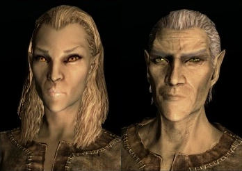
Altmer
Também conhecidos como Elfos Altos, possuem grande afinidade com magia, começam com mais Magicka e regeneram mana rapidamente.
Em Skyrim, a raça escolhida influencia a aparência, as habilidades iniciais e a forma como seu personagem começa a aventura. Cada povo possui uma história, uma cultura e talentos próprios.

Também conhecidos como Elfos Altos, possuem grande afinidade com magia, começam com mais Magicka e regeneram mana rapidamente.
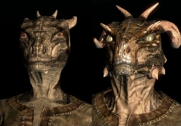
Povo reptiliano capaz de respirar debaixo d'água. Seu poder Histskin permite regenerar a vida rapidamente.
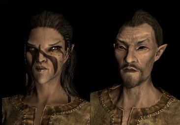
Elfos da Floresta especialistas em furtividade e arquearia, com resistência natural a venenos e doenças.
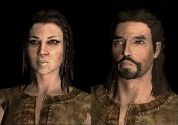
Humanos com forte herança mágica e 25% de resistência natural contra feitiços.
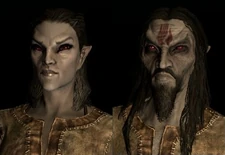
Elfos Negros nativos de Morrowind, resistentes ao fogo e versáteis entre magia e combate.
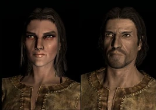
Nativos de Cyrodiil que encontram mais ouro em baús e podem acalmar inimigos com a Voz do Imperador.
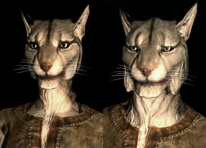
Raça felina com garras que aumentam o dano desarmado e o poder de visão noturna.
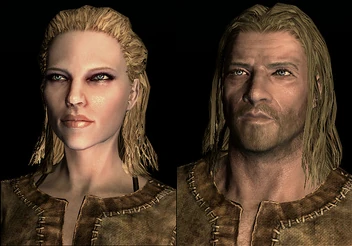
Povo nativo de Skyrim, com resistência ao gelo e o poder de usar um grito de guerra amedrontador.
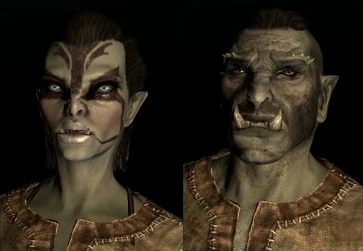
Excelentes guerreiros corpo a corpo. O poder Berserk aumenta o dano causado e reduz o dano recebido.
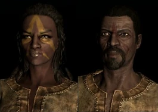
Guerreiros ágeis do deserto, resistentes a venenos e capazes de regenerar Estamina rapidamente com Fúria de Adrenalina.
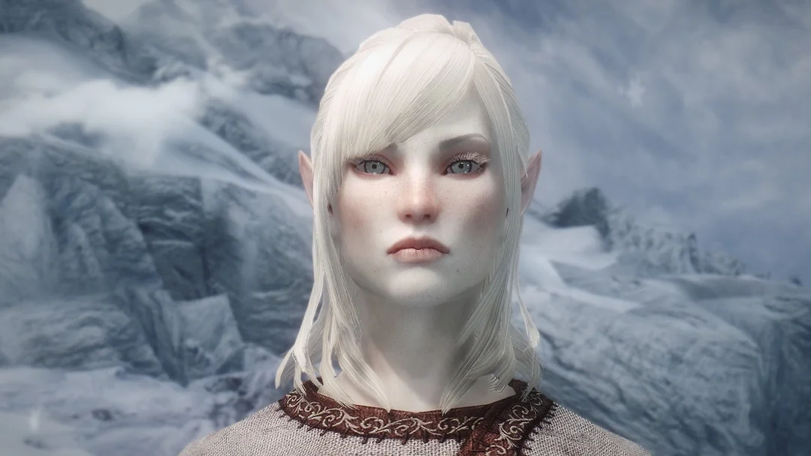
Antigos habitantes de Skyrim que foram transformados nos Falmer. São encontrados em ruínas e regiões subterrâneas, mas não podem ser escolhidos para criar um personagem.
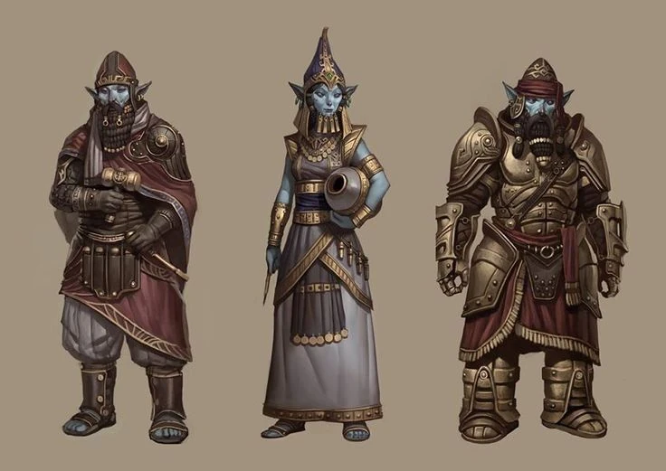
Povo élfico antigo, conhecido por suas cidades subterrâneas e avançada tecnologia. Os Dwemer desapareceram misteriosamente durante a Batalha da Montanha Vermelha e não podem ser escolhidos no jogo.